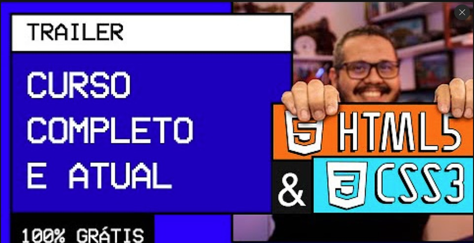

Guanabara quer que eu crie um site onde na página inicial vai aparecer quatro vídeos que o visitante vai poder visitar.

It was tough
Nesse desafio aprendi que EU POSSO USAR A TAG <A> JUNTO COM UMA TAG <IMG> PARA FAZER UMA IMAGEM VIRAR UM LINK TANTO EXTERNO QUANDO INTERNO!!!